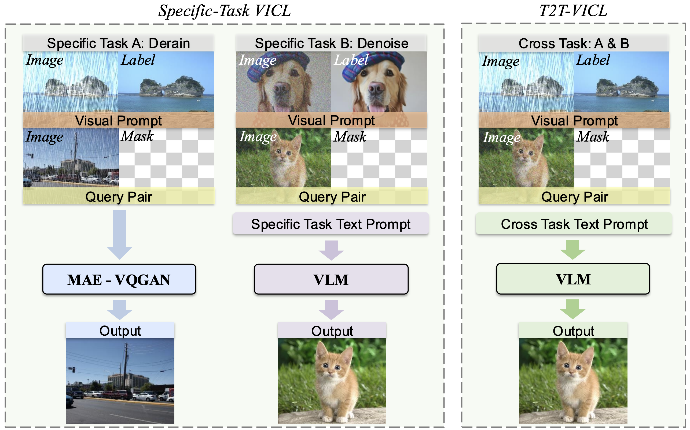
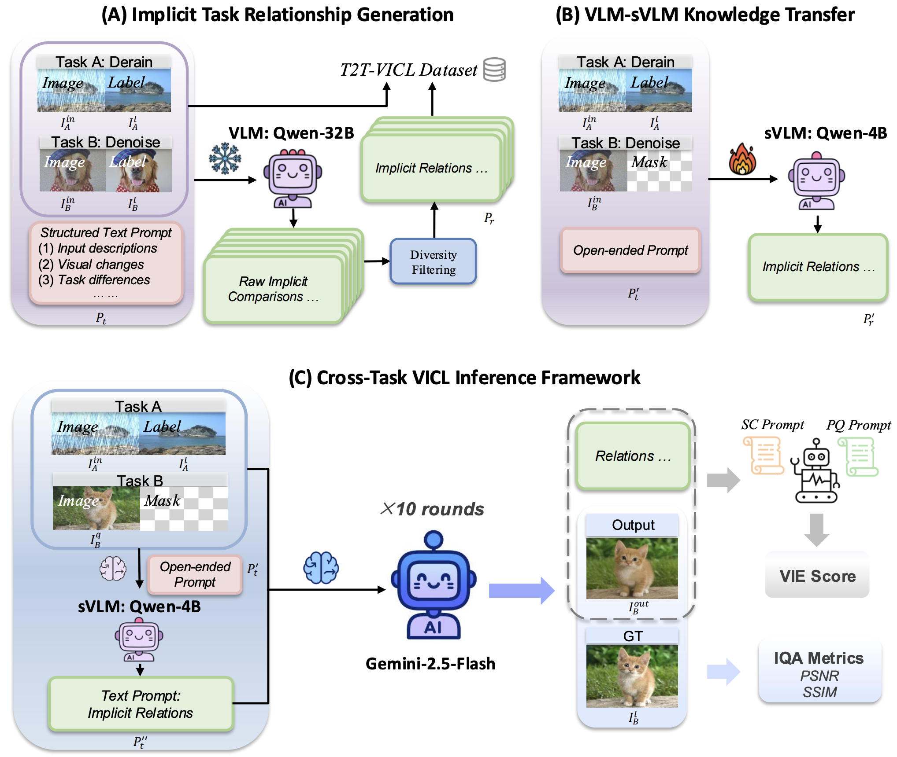
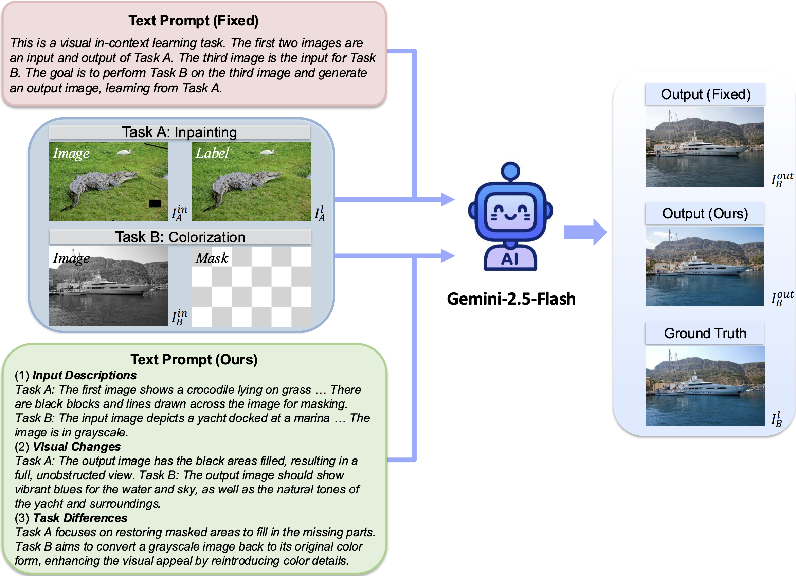
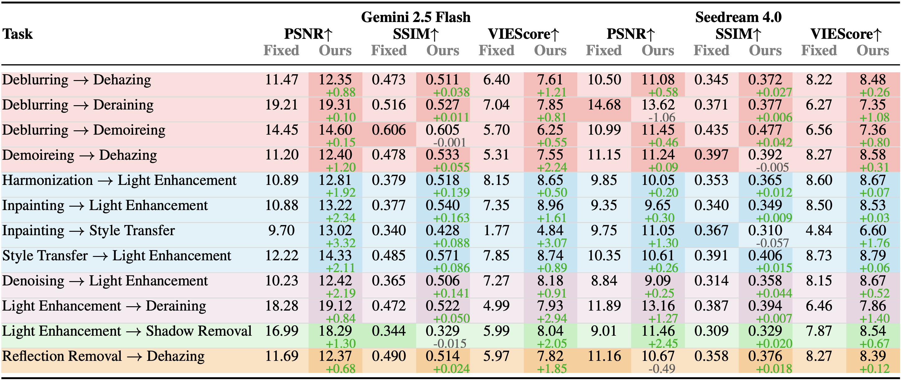
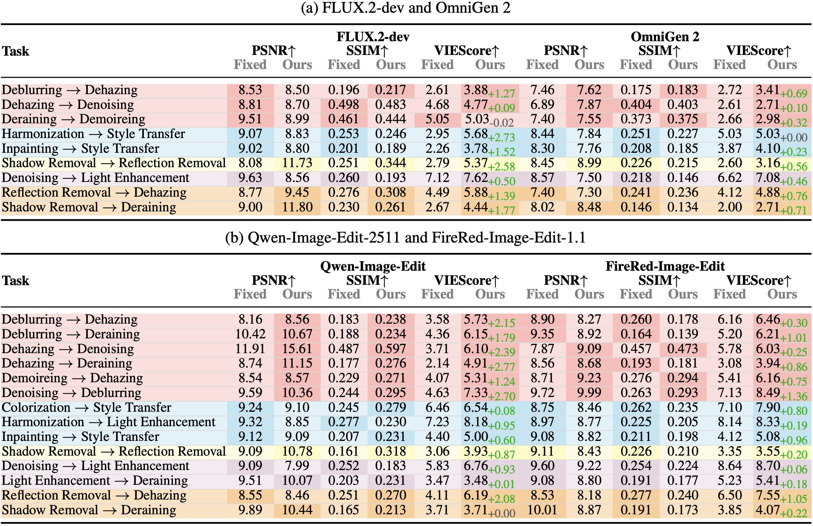

Generate implicit task relations
Qwen2.5-VL-32B-Instruct receives four images from Task A and Task B, then writes concise descriptions of inputs, visual changes, and task differences without naming task labels directly.
arXiv 2026
* Equal contribution. Corresponding author: Zhengzhong Tu.
Can a VLM learn from a demonstration of one visual task, then solve a different visual task on a query image? T2T-VICL turns mismatched visual demonstrations into implicit textual guidance and uses that guidance to drive frozen image-editing VLMs.
Problem setting

Method
T2T-VICL uses language as a bridge between different visual transformations. The teacher observes both source and target task pairs, the student learns to infer the missing target relation from three images, and the final VLM performs image editing under the generated prompt.

Qwen2.5-VL-32B-Instruct receives four images from Task A and Task B, then writes concise descriptions of inputs, visual changes, and task differences without naming task labels directly.
Qwen3-VL-4B-Instruct is fine-tuned on three-image inputs: Task A input, Task A output, and Task B input. It learns to output the teacher-style implicit prompt needed at inference time.
The generated prompt conditions an image-editing VLM such as Gemini-2.5-Flash. Multiple stochastic candidates are ranked with PSNR, SSIM, and VIEScore.

Benchmark
The released VICL benchmark contains paired image data, teacher-generated implicit task descriptions, Qwen-VL SFT metadata, and cross-task evaluation files. Access is gated for research-only, non-commercial use through the data links above.
Deblurring, dehazing, demoireing, denoising, deraining.
Reflection removal and shadow removal.
Colorization, harmonization, inpainting, light enhancement, style transfer.
Results
Across top-tier task pairs, T2T-VICL improves VIEScore for all twelve Gemini-2.5-Flash comparisons against the fixed-prompt baseline. The extended experiments also evaluate Seedream 4.0 and open-source image-editing backbones.
All 12 top-tier cross-task pairs improve in VIEScore with Qwen-generated implicit prompts. Large gains include Inpainting -> Style Transfer, Light Enhancement -> Deraining, and Demoireing -> Dehazing.
All 9 second-tier pairs improve in VIEScore, even when PSNR or SSIM may drop on one-to-many tasks such as colorization and style transfer.
The same prompt-transfer idea is tested with Gemini, Seedream, FLUX.2-dev, OmniGen 2, Qwen-Image-Edit-2511, and FireRed-Image-Edit-1.1.




Positioning
Understanding Task Transfer in Vision-Language Models studies how finetuning open-weight VLMs on one perception task changes zero-shot performance on other tasks, introducing PGF and transfer graphs across 13 perception tasks. T2T-VICL studies a different but adjacent question: whether a VLM can use a visual demonstration from Task A to perform Task B in-context.
Both works ask how visual tasks relate to one another and both treat low-level/perception tasks as a useful testbed for VLM transfer behavior.
T2T-VICL is an executable cross-task image editing pipeline: it generates implicit prompts, conditions frozen image-editing VLMs, and evaluates produced images.
The final generator does not need target-task finetuning. The learned prompt bridge is interpretable, reusable across backbones, and packaged with a cross-task text-image dataset.
Citation
@article{xia2026t2tvicl,
title={T2T-VICL: Unlocking the Boundaries of Cross-Task Visual In-Context Learning via Implicit Text-Driven VLMs},
author={Xia, Shao-Jun and Zhang, Huixin and Tu, Zhengzhong},
journal={arXiv preprint arXiv:2511.16107},
year={2026}
}